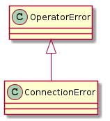
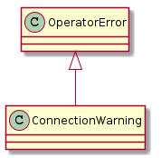
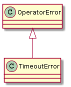
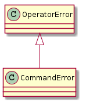
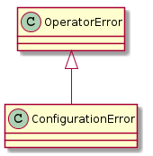
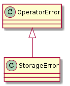
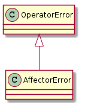
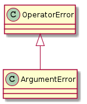

A module to hold common exceptions.
These are made sub-classes of the OperatorError so that the hortator can recover and move on to the next hortator.
Any exception raised that isn’t a sub-class of the OperatorError is unexpected and will crash the program (to make it obvious).

| ConnectionError | A ConnectionError is raised by connectinos to indicate a problem. |

| ConnectionWarning | A connection warning is a non-fatal connection-related error. |

| TimeoutError | A TimeoutError is a generic Timeout exception to wrap the various timeout |

| CommandError | A CommandError reflects a problem with the command on the Device-side |

| ConfigurationError | A ConfigurationError is raised if there is an error in the configuration file |

| StorageError | An StoragError is raised by the StorageOutput |

| AffectorError | An Affector Error is raised for non-recoverable affector errors |

| ArgumentError | raised if command-line arguments don’t produce valid output |